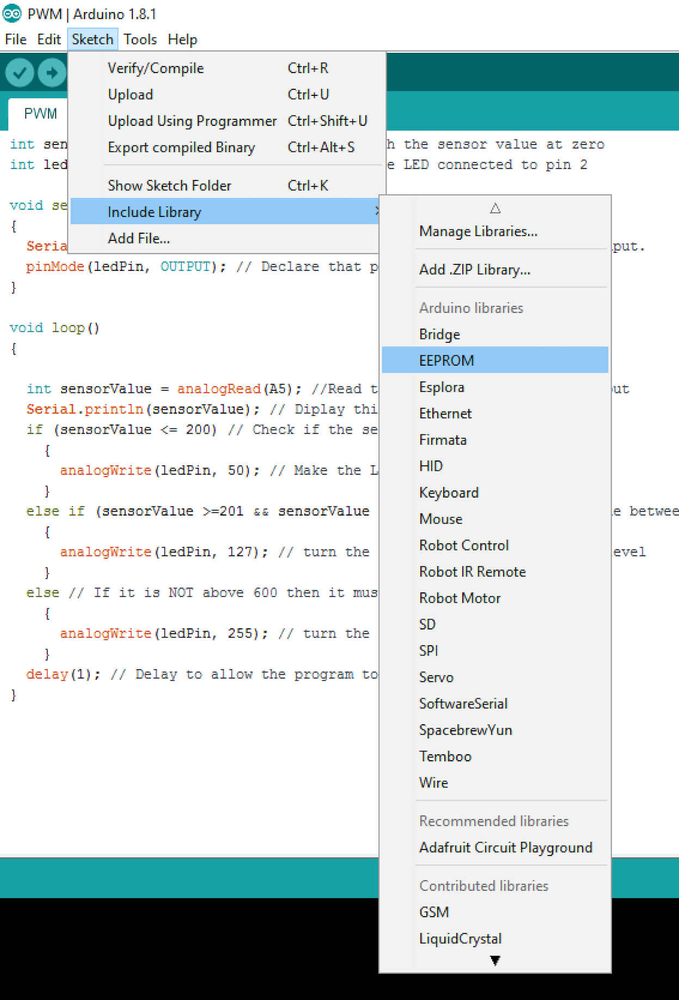
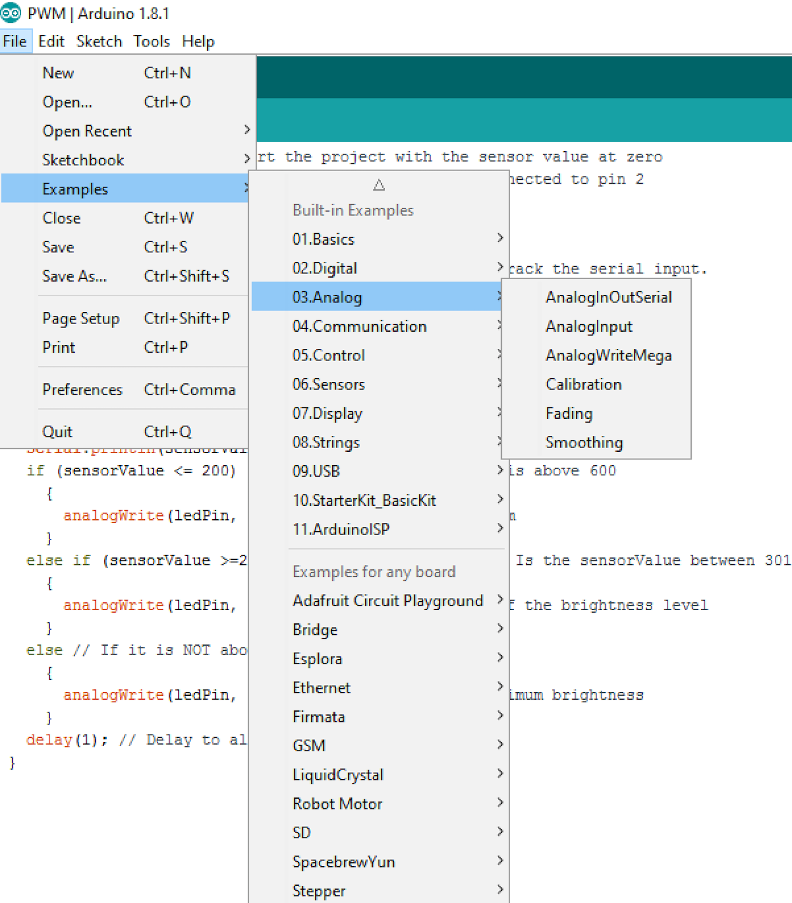

libraries and Examples
1 Libraries
Learn It
- The Arduino environment can be extended through the use of libraries, just like most programming platforms. Libraries provide extra functionality for use in sketches, e.g. working with hardware or manipulating data.
- To use a library in a sketch, select it from Sketch > Include Library.

- A number of libraries come installed with the IDE, but you can also download or create your own.
- See these instructions for details on installing libraries.
- There's also a tutorial on writing your own libraries.
- See the API style guide for information on making a good Arduino-style API for your library.
Learn It
- The Arduino comes with a large number of libraries as standard in the Arduino IDE.
- EEPROM - reading and writing to "permanent" storage
- Ethernet / Ethernet 2 - for connecting to the internet using the Arduino Ethernet Shield, Arduino Ethernet Shield 2 and Arduino Leonardo ETH
- Firmata - for communicating with applications on the computer using a standard serial protocol.
- GSM - for connecting to a GSM/GRPS network with the GSM shield.
- LiquidCrystal - for controlling liquid crystal displays (LCDs)
- SD - for reading and writing SD cards
- Servo - for controlling servo motors
- SPI - for communicating with devices using the Serial Peripheral Interface (SPI) Bus
- SoftwareSerial - for serial communication on any digital pins. Version 1.0 and later of Arduino incorporate Mikal Hart's NewSoftSerial library as SoftwareSerial.
- Stepper - for controlling stepper motors
- TFT - for drawing text , images, and shapes on the Arduino TFT screen
- WiFi - for connecting to the internet using the Arduino WiFi shield
- Wire - Two Wire Interface (TWI/I2C) for sending and receiving data over a net of devices or sensors. The Matrix and Sprite libraries are no longer part of the core distribution.
- There a many more independantly developed libraries which can be found online.
2 Examples
Learn It
- Built-in Examples are sketches included in the Arduino Software (IDE).
- To open them click on the toolbar menu: File > Examples.

- These simple programs demonstrate all basic Arduino commands.
- They span from a Sketch Bare Minimum to Digital and Analog IO, to the use of Sensors and Displays.
- Click on this link to see all of the examples available for you to use.
Try It
- go to the Button example using the File > Examples menu.
- Now try and edit the example to get your arduino to turn on an LED when you press the button.
- If you have time, you can now start to try using the libraries and examples to develop your own great Arduino project.
- Here are some excellent websites to look at to get some inspiration:
Badge It
- Take a screenshot of your updated Button code that you edited to work with your Arduino.
- Upload the screenshot to www.bournetolearn.com